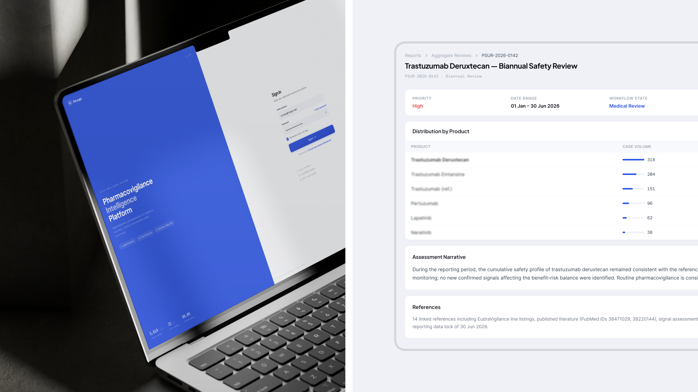
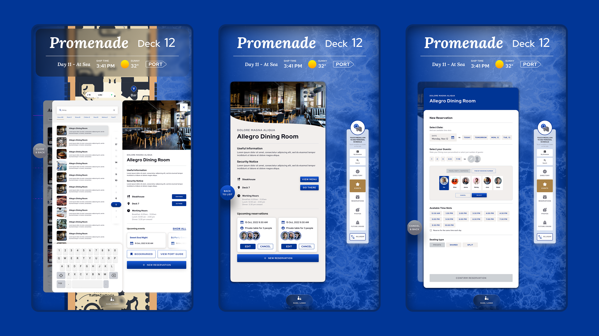

Passenger boarding, cut in half
Carnival Corporation · 2022–2023Redesigned boarding touchpoints across 65-inch displays, crew tablets, and passenger mobile — each with its own interaction model rather than one layout rescaled.
I design regulated, data-heavy software — the interfaces where a wrong click is expensive.
What I do
Pharmacovigilance dashboards. Identity verification. Boarding systems that thousands of people pass through in a single morning.
Most of the work is removal — steps, ambiguity, screens that shouldn't exist. Then writing the rules down so the next team doesn't put them back.
Measured outcomes
Two projects where the improvement was tracked before and after release.
Redesigned boarding touchpoints across 65-inch displays, crew tablets, and passenger mobile — each with its own interaction model rather than one layout rescaled.
Restructured the interaction logic to cut cognitive load for medical staff while keeping every compliance requirement intact.
Selected work
Pharmacovigilance & medical data · B2B SaaS · US, remote
Clinical workflows and data dashboards for teams who can't afford a wrong click. Defining interaction logic with medical staff before design, and documenting edge cases so engineering doesn't have to guess.

Fintech, CRM, web platforms · Netherlands, remote
KYC and identity verification flows rebuilt to stop losing people mid-onboarding. Led design end to end — client discovery, wireframes, UI, usability testing — and presented the reasoning at every stage.
Hospitality ecosystem · multi-device · US, remote
One product family across 65-inch displays, tablets, and phones, for passengers and crew alike. Built adaptive interaction logic — not scaled layouts — and contributed to the shared design system behind it.

Earlier — Freelance product design (2021–2022) · HelloClicks, UK (2020–2021) · The Yard Design, UK (2017–2020) · Silk Design, designer to team lead (2012–2017)
How I work
In regulated products, compliance isn't the obstacle you design around — it's the shape of the design. Cutting that clinical workflow from twelve steps to five started with learning which of the twelve existed for a reason.
A wall display and a phone are different interaction models, not one layout at two scales. Same system, same vocabulary, different behaviour — that's what keeps an ecosystem feeling like one product.
Empty states, error logic, what happens on the 400th row. Whatever isn't written down gets invented during development, and it gets invented differently by each developer.
Capabilities
Get in touch
Open to senior product design roles and contract work with US and EU teams. Fastest reply is by email.